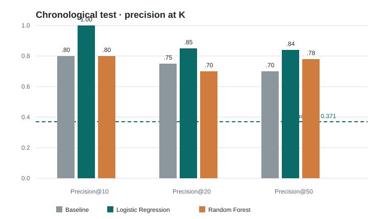
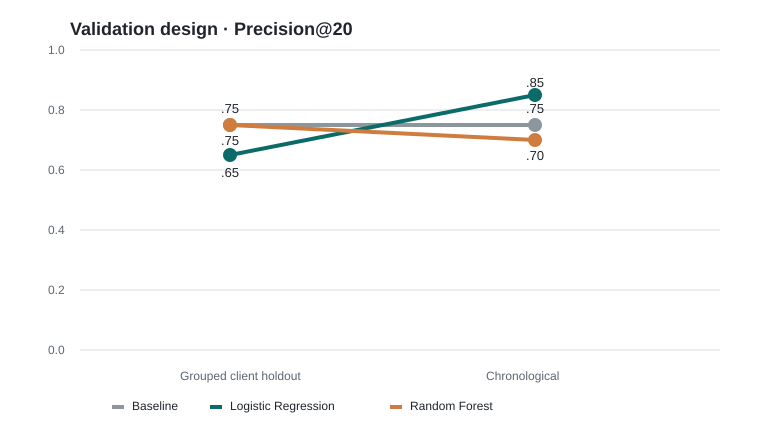

A ranking problem, not an automation problem
Content teams often have more pages to inspect than reviewers can handle. The practical question here is narrow: given signals available at a decision moment, which items should receive attention first?
The output is therefore a ranked review queue. It is useful only if it is compared with a transparent rule, evaluated on outcomes that occur later, and presented with enough caution that a reviewer can disagree with it.
Research question. Can decision-time search and engagement signals rank pages associated with a later decline in average daily impressions better than a simple visibility-and-click rule, when tested on a future calendar window?
A gated warehouse, two time boundaries
The analysis uses the FlyRank internship warehouse release, not the bundled 30,000-row starter CSV. The source table is daily content performance at the client × content × report-date grain. The model uses month-end snapshots: February 28 for training and March 31 for testing; the corresponding March and April windows provide the later outcomes.
After joining each snapshot to its next-month outcome, the chronological training set contains 150,802 rows and the test set contains 176,441 rows. The test proxy base rate is 0.371, meaning 37.1% of evaluated test rows meet the proxy definition.
Client and content hashes are used only for joins and grouping. They are not model features, and no names, titles, domains, URLs, queries, or credentials are included in this public artifact.
Signals known before the outcome
The five approved raw signals are GSC impressions, GSC clicks, GSC average position, GA4 sessions, and GA4 users. The implementation adds documented transformations: a clicks-to-impressions ratio, an indicator for observed position, position-zero treated as missing, and GA4 availability-aware values plus an availability flag.
The evaluation target is future_decline_proxy: 1 when next-month average daily GSC impressions are below the decision-time GSC impressions. This is a proxy outcome, not a ground-truth “needs refresh” label.
Models and selection
The Week-4 baseline is 2 × I(impressions ≥ 500) + I(clicks ≥ 10). Week 5 compared that rule with Logistic Regression and Random Forest. The grouped-client split selected Random Forest at Precision@20, but the stricter chronological audit changed the operational conclusion: Logistic Regression is the final model because it performs best on the chronological test while remaining easier to inspect.
Validation and leakage checks
The earlier design used a 70/30 GroupShuffleSplit by client on the March snapshot. The primary design trains on February features and March outcomes, then tests on March features and April outcomes. Position imputation is fit on training data only. A deliberate leakage demonstration reached accuracy 1.000, while the real feature set passed the leakage audit: no label-derived trend fields, future outcome fields, decision-derived scores, identifiers, or report dates enter model inputs.
Association is not causation. Offline ranking performance is not production impact, and a model probability is not a statement of truth.
The validation design changes the story
All rows below are scored at the same three cutoffs, with the baseline included on each evaluation population. The chronological table is the canonical final comparison.
Primary result · chronological validation
| Method | Precision@10 | Precision@20 | Precision@50 | Base rate |
|---|---|---|---|---|
| Week-4 baseline | 0.80 | 0.75 | 0.70 | 0.371 |
| Week-5 Logistic Regression | 1.00 | 0.85 | 0.84 | 0.371 |
| Week-5 Random Forest | 0.80 | 0.70 | 0.78 | 0.371 |

Before and after validation
| Validation / method | @10 | @20 | @50 | Base rate |
|---|---|---|---|---|
| Grouped / baseline | 0.80 | 0.75 | 0.72 | 0.405 |
| Grouped / Logistic Regression | 0.80 | 0.65 | 0.76 | 0.405 |
| Grouped / Random Forest | 0.80 | 0.75 | 0.68 | 0.405 |
| Chronological / baseline | 0.80 | 0.75 | 0.70 | 0.371 |
| Chronological / Logistic Regression | 1.00 | 0.85 | 0.84 | 0.371 |
| Chronological / Random Forest | 0.80 | 0.70 | 0.78 | 0.371 |

What this work cannot claim
- The target is a future-performance proxy, not a verified refresh need or business outcome.
- The observational design cannot show that refreshing content causes impressions to recover.
- Two adjacent calendar transitions are useful for an audit but are not evidence of stable production performance.
- Precision at small K describes ranking quality for review capacity; it does not measure recall, revenue, editorial quality, or user benefit.
- Scores can drift when data availability, content mix, or search behavior changes.
Make the queue a conversation starter
- Review high-priority items for freshness and search intent. Use low CTR, visibility gaps, position gaps, and weak engagement as reason codes to inspect, not as automatic verdicts.
- Check engagement and metadata alignment. A reviewer can assess whether the page promise, snippet, and user path match the observed search and session signals.
- Use archetypes to make review consistent. Separate low-visibility/low-engagement, search-visibility-gap, high-opportunity, and mixed-signal content before choosing a response.
- Monitor rather than refresh when the signal is weak. Confidence tiers and reason codes should preserve reviewer judgment and business context.
No-go list. Do not publish, delete, or rewrite content automatically; make legal or medical editorial claims; treat probability as ground truth; or make irreversible changes from a ranking alone.
Trace every claim back to the work
The analysis is documented in the repository’s Week 6 validation audit and Week 7 action playbook. The original question and framing are in Week 1 and Week 2; the data contract and leakage check are in Week 3 and its leakage notebook.
For a rerun, use the gated warehouse release and keep the Hugging Face token in Colab Secrets or an environment variable. The notebooks use seed 42, train-only preprocessing for the chronological model, and DuckDB parquet reads over the February–April 2026 monthly partitions. The open-source paper page contains no warehouse extracts.
Data credit
Thanks to FlyRank for the anonymized internship warehouse and the applied ML learning environment. The warehouse is available through the gated FlyRank internship dataset; access and use remain subject to its data-use terms.
Prepared as a public-safe research and decision-support artifact. No client names, private URLs, private queries, credentials, API keys, tokens, or raw content identifiers are presented here.